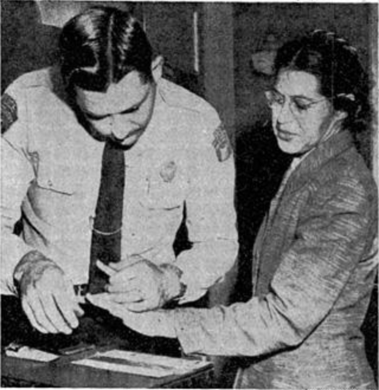

The Beginning of a New Era for American Black People
By Special Correspondent — Montgomery, Alabama — Feb. 23, 1956
On the evening of December 1, 1955, Rosa Parks, a 42-year-old seamstress and secretary of the local chapter of the NAACP, boarded a Montgomery City Lines bus after finishing her shift at the Montgomery Fair department store. She paid her fare and sat down in the first row of the colored section.
When the white section filled up and the bus driver, James F. Blake, ordered Parks and three other Black passengers to vacate their row so that a white man could sit without being adjacent to a Black person, Parks refused. She was arrested and charged with violating segregation laws.
Her act was not spontaneous. Parks had long been an activist for civil rights, trained at the Highlander Folk School in Tennessee. But it was this single act of dignified refusal that ignited a movement. Within hours, community leaders began organizing what would become the Montgomery Bus Boycott.
381 Days of Resistance
Led by a young Baptist minister named Martin Luther King Jr., the newly formed Montgomery Improvement Association coordinated an astonishing feat of civic organisation. Black residents, who made up approximately 75% of the bus system's ridership, walked, carpooled, and rode mules to work every day for 381 days.
The economic impact on the bus company was severe. Meanwhile, the boycott drew national and international attention, putting Montgomery — and America's racial laws — under a harsh spotlight.

On June 5, 1956, a three-judge federal district court ruled in Browder v. Gayle that Alabama's racial segregation laws for buses were unconstitutional. The U.S. Supreme Court affirmed that decision on November 13, 1956. On December 20, 1956, federal order arrived in Montgomery; the boycott ended the next day.